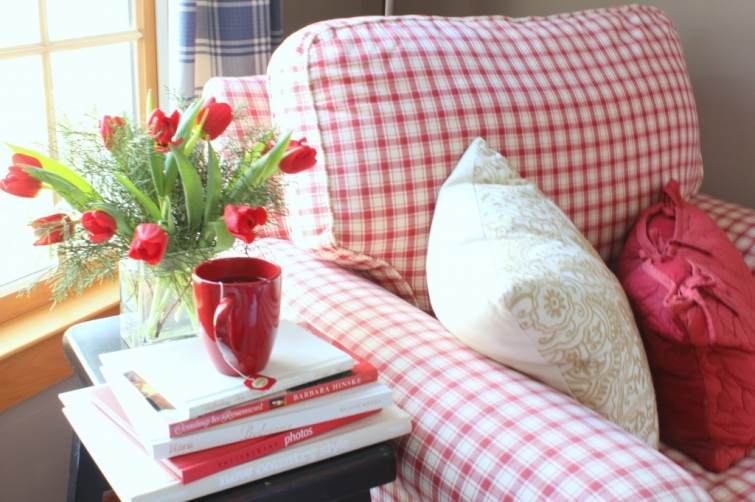
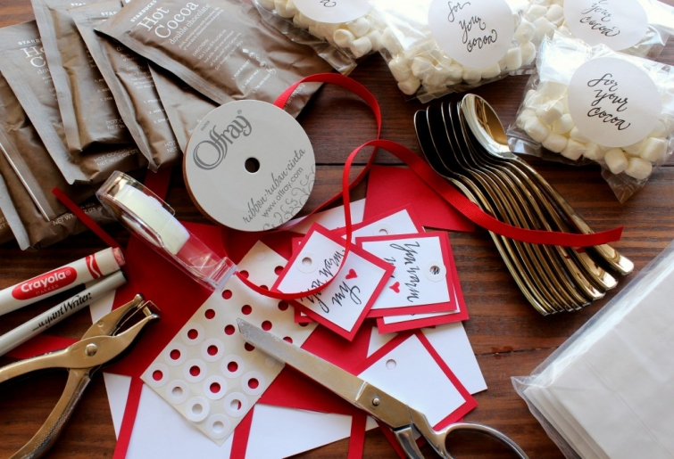

.png)
.PNG)
.PNG)
.PNG)
.PNG)
.PNG)
.JPG)
.JPG)
.PNG)
.PNG)



The foyer is back to having a bit of red after its black and white of January. It started with these supplies (some leftover from last month supplemented with more)…

They are what I used to make these little Valentine bags of cocoa and marshmallows (and the spoons are disposable in case you can’t tell.)

Then the little bags went into this jar…
which went on the buffet in the foyer – now happily decorated with red again. 🙂
Between the foyer and the great room is an old piano. It was first mine as a child, but then I had to share it with my little sister. Anyway, that old piano gets a spot of red for Valentine’s Day, too.

You know there are red pillows in the great room, and if you look out the window, you will see the color again on the deck umbrella.

The mantel has a little dose of red mixed in with my collection of vintage cameras (in jars of course.)

I made this Valentine print to use with the cameras and the photograph of the children.

Here is a little closer look at it on the mantel.
And here are the cameras and the red candles at the other end of the mantel.
Across from the fireplace is the sofa – the biggest use of red in the room. It is soon to be redressed in a khaki linen.

And the last of the red for today – a closer look at the pot of red tulips on the end table (where the blooms are lasting much better than those did in the bedroom.)

I plan to be back again soon with a few photos of the dining room and some ideas for Valentine’s Day gifts. I loved all your enthusiasm for using red from my last post!
So what are you doing special for Valentine’s Day this year?
We’d love to hear about it!


.PNG)
I have just discovered your site via Hooked on Houses. Your house is lovely and inspiring. Feels warm and friendly. I particularly like your khaki sofa and as I am about to order new sofas for our front (not so great!) room, am thinking this color is a good option as it appears to go with different color schemes but stays looking neutral too.
————————————————————
Oh Voula, I am so glad Julia’s site led you to Talk of the House! I am very appreciative of Julia sharing the blog love for my little blog here. She is terrific! Your choice of a khaki sofa is a smart one I think. It works so well with any color scheme and can be updated with simple throw pillows any time you get the urge to change your décor. I have been trying to talk my mother into getting one too!
Please stop in to visit here again. 🙂
Kelly
Love the red! Just found your blog and love it. I live in Atlanta and love the southern areas you feature. I love your framed black and white photos in those frames. I have checked michaels and they don’ carry them. Could you give more info on them. Maybe I can find on line. Thanks and keep up the good work.
so beautiful……..you have made me realize just how much the little things count. What do you do with the baggies in the jar? Does your family use them, or do you give them to guests, or both?
Kelly,
I love the red touches in your home. The little cocoa and marshmallow gift packs are great. I cannot believe those spoons are disposable…they look like stainless. Where did you find them?
I’m planning to recover our red and cream buffalo check sofa in our family room in a more neutral fabric, great minds think alike! 🙂
Karen
I love your red mug in the first picture Kelly. I have one just like it!! I am planning to make some homemade treats for my neighbors and I also have a little package put together for my sweet husband. Thanks for sharing “red”…I will have to add some red touches around my house.
I love the red in your home and especially the tulips! I don’t have that much red in my house but would certainly like to incorporate some! If you EVER have a tour of your home Kelly, please let me know! I will be there!
Love those little bags in the jar!
I love pops of red and enjoy decorating with them. Of course, being married to a retired fire captain helps. 🙂
I have a small camera collection that I enjoy displaying on my mantel from time to time. I would like to add to it one of these days. Your collection is adorable.
Kelly, I love the shade of red that you use, especially your couch. Most of the reds in my house are more cranberry, but I’m liking yours much better! I think I’m going to change over to a brighter shade. Thanks for the inspiration!
I love RED…all of it. Your home looks so pretty with all of the red. It looks so cheery.
When I asked my grandkids what they wanted me to make them for Heart Day, they said “Banana Pudding”, pleeez! So I found a large red heart shaped bowl and on top I am going to make a red raspberry jam heart outline!! This is my BD week so lots of fun things this week! Hope your week is LOVEly!:)
Tulips are my favorite flower. I love cut tulips because they continue to grow after they are cut — quite dramatically. I think they are at their best when they’ve curved along a long arc and are just about to drop their petals. So don’t replace those lovely blooms in your bedroom just yet!!
I am sure you have heard of the old penny in the tulip water trick? It does seem to help.
Kelly,
I love all of your red accents! We have lots of red around here also!
As for Valentine’s day this year we are going to do a seafood boil here at home. Since Valentine’s day is on Thursday we will celebrate with our daughter. We are going to have shrimp, scallops, corn on the cob, new red potatoes and crusty bread. For dessert I made mint truffles today to go with an ice cream sundae bar. Then next Saturday my husband will go on a post-Valentine’s day date. We have the darling daughter spending the night my folks that evening. What are you guys going to on Valentine’s day or post Valentine’s day for your date/celebration?
P.S. I know you’ll love this…the husband built and hung shutters for me as my Valentine gift this year. I have been hinting for about 18 months that the front of our home needs them. He even stained them a dark chocolate to match our Adirondack chairs.
I love your red accents, it adds so much interrst. GREAT JOB.